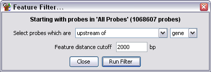

The feature filter allows you to filter probes based on their proximity to a given class of features.

The options you have are to choose what class of features you want to compare to. You can also choose the relationship you want your probes to have to the features
For all of the options except Surrounded By you can also choose a distance cutoff to say how far beyond the probe a feature can be and still be classed as a match.
You can also choose to limit the features which are used based on their strand.
Although this filter is useful in its own right, you might also want to consider using the Feature Probe generator to define your probes if a particular class of features is going to be the main focus of your analysis.